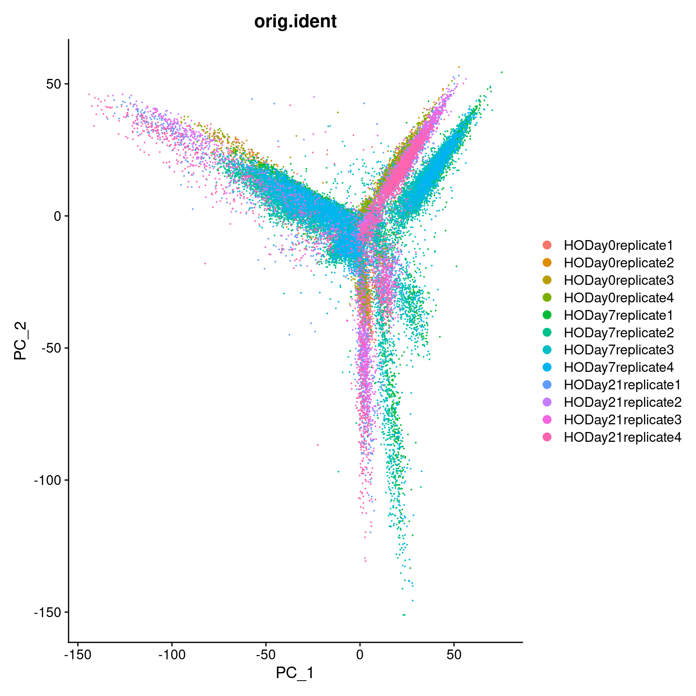
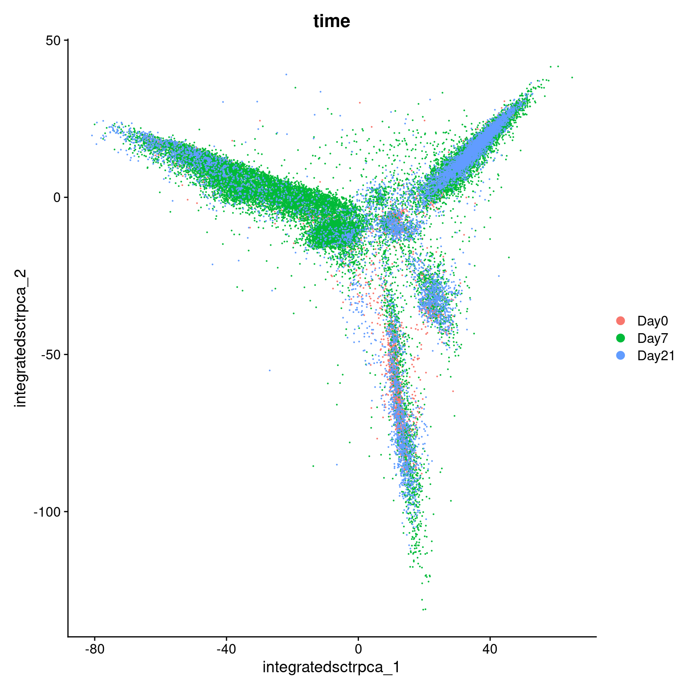

Workflow Overview

Introduction
In this section, we will use principal component analysis (PCA) to
reduce the dimensionality of the data, first by grouping correlated
features and second by excluding correlated features that are less
likely to correspond to interesting biological variance.

|
A. Clustering the expression patterns directly on the feature-barcode
count matrix is impractical because the expression patterns in the
counts are often weak, repetitive, and diffuse (scattered across many,
many genes). Also clustering cells across 20k dimensions (i.e. 20k
genes) is extremely computationally intensive.
B. Principal
Component Analysis considers (PCA) the count data from new orientations
that maximize the variance across the data. In this way, PCA replaces
the original count matrix with new matrix of principal component (PC)
values for each cell.
C. Because PCA ranks the PCs from most
variance to least, the truly discriminating PCs will be a small subset
of top-most PCs. Focusing only on the top 10-30 PCs instead of 20k genes
tells the same story, but cuts through 99.9% of the clutter making
clustering about 1000x faster.
|
After filtering and normalization, our next goal is to cluster the
cells according to their expression profiles. However, even after
filtering, we expect to have about 20,000 cells assayed with
approximately 21,000 genes measured per cell. This means that we are
working very “high-dimensional” data.
High dimensional data presents two challenges:
- The scale of the data makes analysis steps costly and slow
- There is likely uninteresting variation across our data that we want
to exclude
Similar to the previous sections, the process of parameter selection
after PCA is often iterative and while we will be showing a single
option, multiple parameter choices may need to be tested.
Objectives
- Understand why PCA is used to reduce high-dimensional single-cell
data prior to integration and clustering
- Use the
RunPCA() function to generate principal
components for our data
- Choose an appropriate number of principal components to capture
variance in our data
- Use
IntegrateLayers to integrate across our data prior
to clustering
What is PCA?
In practical terms, Principal component analysis (PCA) creates a
simpler, more concise version of data while preserving the same “story”.
For example, we can think of a full single-cell data set as similar to
the full Lord of the Rings trilogy - large and complex with quite a bit
of detail that might be repeated and isn’t necessary to understand the
overall plot and make running the analysis prohibitively slow and
costly.
Like a Cliff notes version or a movie pitch for the book series, the
PCs capture correlated expression and reduce the size and complexity of
the data, while still allowing the overall structure of the data - that
we would expect to be related to cell-types or plot points in the
analogy - to be represented, while also making the computation
faster.
PCA example
To understand how PCA works for single-cell data, we can consider a
smaller dataset measuring the expression of four genes measured in just
two cells, we could plot the expression of those four genes, with data
from one cell plotted on the x-axis and the second cell plotted on the
y-axis.

If we wanted to represent the most variation across the data, we
would draw a diagonal line between gene B and gene C - this would
represent the first principal component (PC). However, this line doesn’t
capture all the variance in this data as the genes also vary above and
below the line, so we could draw another line (at a right angle to the
first) representing the second most variation in the data - which would
represent the second principal component (PC).

We’ll skip the process of generating all possible PCs, but running
PCA on our data will result in a score for each cell for each PC and
each gene will have a weight or loading for a given PC. By definition,
the PCs capture the greatest factors of heterogeneity in decreasing
order in the data set (source).
Why PCA is useful for single-cell data
In contrast to bulk RNA-seq, where the majority of the variance in a
given dataset are usually explained by the first and second PC, for
single-cell data we expect that many more PCs are contributing to the
overall variance.
However, we can assume that biological processes affect multiple
genes in a coordinated way. Therefore the top PCs likely represent
biological structure rather than random technical or biological noise,
which affects each gene independently and and we can use the top several
PCs to approximate the full data set in downstream analysis (source).
This reduction in dimensionality, for example from 10,000 cells x
19,000 genes to 20 PCs, allows us to select PCs that are more likely to
correspond to biological variation related to the expected cell
types/subtypes and make the downstream clustering computationally
feasible.
More context using PCA for single-cell
data
To read more on PCA, please refer to the HBC
- Theory of PCA content, from which this section is adapted and the
original source material for that content, specifically Josh Starmer’s
StatQuest video.
For additional detail on , the OSCA chapter on Principal
components analysis includes a more descriptive overview.
Sparsity in single-cell data
In addition to the “high-dimensionality” expected for single-cell
data, we expect the data to be both “sparse” and “noisy”. Sparse in the
sense that many genes will either not be expressed or not measured in
many of the cells and have zero values. Noisy due to biological
variability and the practical limitations of both capture and sequencing
depth (source).
Note on zero “inflation” of single-cell data
Single-cell data is sometimes described as “zero inflated”, however
work by Svensson
has challenged that characterization and argued that the higher number
of zeros observed in scRNA-seq compared to bulk RNA-seq is more likely
due to biological variance and lower sequencing saturation than
technical artifacts. Work by Choi
et al. (2020) support that zeros in single-cell data are due to
biology but Jiang et
al. (2022) delves more into the “controversy” zero inflation,
including common approaches for handling zeros and the downstream
impacts.
For sparse, high-dimensional, biological data, we expect
many genes to have correlated expression as they would be impacted by
the same biological process and for other genes to have either low (more
noisy) or similar expression across the cell population and therefore
not likely to correspond to cell-type/subtypes.
So how do we determine what and how many genes to use before
classifying cells into clusters based on their expression?
More detail on dimensionality reduction
The Ouyang
Lab has a “gentle introduction” section of their materials that goes
into greater details on dimensionality reduction including how similar
strategies are used in deep learning models. Additionaly, the OSCA book
has a chapter
on Dimensionality reduction that has useful context.
Run PCA on our dataset
Since PCA is sensitive to scale, we will run it on the SCT normalized
assay (reference).
We will name the reduction in an informative way to keep them clear for
us in the future. In this case, our data has not yet been integrated,
but it has been SCT normalized. So we will name the reduction
unintegrated.sct.pca. Note that SCTTransform()
returned a set of highly variable genes, and the RunPCA()
function will use this subset to determine the PCs and genes associated
with those PCs.
# Code block - run PCA
geo_so = RunPCA(geo_so, reduction.name = 'unintegrated.sct.pca')
geo_so
An object of class Seurat
46955 features across 31560 samples within 2 assays
Active assay: SCT (20466 features, 3000 variable features)
3 layers present: counts, data, scale.data
1 other assay present: RNA
1 dimensional reduction calculated: unintegrated.sct.pca
After running the command in the console, we should see that the
geo_so Seurat object has been updated to add “1 dimensional
reduction calculated”.
We can then visualize the first several PCs using the
DimHeatmp() function, which orders both cells and features
(genes) according to their PCA scores and allows us to see some general
patterns in the data. Here we will specify that the first 24 PCs be
included in the figure and that 500 cells are randomly subsetted for the
plot. Note - you may need to increase your plot window size to
resolve errors regarding figure margins.
# Code block - plot cell by gene heatmaps for first several PCs
DimHeatmap(geo_so, dims=1, cells=500, balanced=TRUE, reduction = 'unintegrated.sct.pca') # look at first PC alone first
DimHeatmap(geo_so, dims=1:18, cells=500, balanced=TRUE, reduction = 'unintegrated.sct.pca') # first 18 PCs
# note - need to use png() to write to file because this isn't a ggplot
png(filename = 'results/figures/qc_pca_heatmap.png', width = 12, height = 40, units = 'in', res = 300)
DimHeatmap(geo_so, dims=1:18, cells=500, balanced=TRUE, reduction = 'unintegrated.sct.pca')
dev.off()
As we scroll down in this plot, we see less and less structure in our
plots indicating that no only is less variation is being represented by
larger PCs overall but also that those PCs are less likely to correspond
to variation of interest, e.g. corresponding to cell types/subtypes.
What genes are contributing the most to each PC?
We can also visualize the loadings for genes contributing to each
principal components using Seurat provided functions source.
We can highlight genes loaded for dimenstions of interest using using
VizDimLoadings():
# Code block - gene loadings for PC1 and PC2
VizDimLoadings(geo_so, dims = 1:2, reduction = 'unintegrated.sct.pca')
ggsave(filename = 'results/figures/qc_pca_loadings.png', width = 12, height = 6, units = 'in')

How
does Seurat use PCA scores?
Per the Ho
Lab’s materials - “To overcome the extensive technical noise in any
single feature for scRNA-seq data, Seurat clusters cells based on their
PCA scores, with each PC essentially representing a ‘metafeature’ that
combines information across a correlated feature set. The top principal
components therefore represent a robust compression of the dataset.”
Visualizing relative contributions of each PC
One way to evaluate the PCs to include is by looking at an elbow
plot, which shows the percent variance explained by successive PCs.
We’ll use the ElbowPlot() function to do this, specifying
that the first 50 PCs be plotted.
# Code block - elbow plot
ElbowPlot(geo_so, ndims = 50, reduction = 'unintegrated.sct.pca')
ggsave(filename = 'results/figures/qc_sct_elbow_plot.png', width = 8, height = 8, units = 'in')

In this plot, we could arbitrarily choose a number along the x-axis
that looks like a sharp change in the variance from one PC to the next,
that is, an elbow. Of course, while that’s often the recommendation in
tutorials, the choice of where the point of the “elbow” is, is not
always obvious, and this plot is no different. We could also try to
quantify our choice.
Choosing the number of significant PCs for dimensionality
reduction
As we discussed above, we don’t want to use all the PCs generated for
a single cell data set but instead want to select a subset to limit the
downstream steps to variation that’s more likely to correspond to cell
types or subtypes. So how many PCs should be used?
A good starting point for determining how many PCs to select for your
single-cell analysis is to understand the “resolution” of your
biological question. Is answering your biological question dependent on
identifying rarer cell types or specific subtypes? Or are broader
cell-types more relevant?
For this dataset, we are expecting a diversity of cell types and cell
populations that mediate wound healing, but are also that are part of
the aberrant transition to bone, which might be more rare in the
population. So for this dataset, we might want to consider starting with
more PCS rather than too few PCs to start. Again, in a full analysis
workflow, our selection at this step might be more of a starting point
for further iterations than a final decision.
Using a (crude) optimization to select a starting point
Instead of choosing based on the elbow plot by sight alone, we can
try to quantify our choice. Here we create a function to return a
minimum PCs based on two possible metrics (cumulative variation or above
a minium step size) and then we’ll apply that function to our data:
# Code block - Function to determine optimal PCs after RunPCA()
optimal_pcs = function(so, reduction) {
# quantitative check for number of PCs to include
pct = so@reductions[[reduction]]@stdev / sum(so@reductions[[reduction]]@stdev) * 100
cum = cumsum(pct)
co1 = which(cum > 90 & pct < 5)[1]
co2 = sort(which((pct[1:length(pct)-1] - pct[2:length(pct)]) > .1), decreasing = T)[1] + 1
pcs = min(co1, co2)
return(pcs)
}
# Apply function to our data
pcs = optimal_pcs(geo_so, 'unintegrated.sct.pca')
pcs
[1] 16
# Based on the heatmap, we'll modify to 13 PCs
pcs = 13
Again, this number is likely a starting point and may need to be
revised depending on the outcome of the downstream steps.
Other more quanitative parameter selection
options
While outside the scope of this workshop, there are community efforts
to develop more sophisticated methods to select an appropriate number of
PCs, like the chooseR
package findPC
package or using
clustering trees to evaluate the stability of parameter choices.
Visualizing our PC results
In addition to selecting a reduced number of PCs to represent our
data, we can also visualize , similarly to how we often look at samples
for bulk RNA-seq using the DimPlot() function, with each
cell plotted along the selected PCs and colored by a selected meta-data
column:
?DimPlot # default dims = c(1,2)
# Code block - PCA style plot for PC1 and PC2 (unintegrated)
DimPlot(geo_so, reduction = 'unintegrated.sct.pca', group.by = 'orig.ident') # first label by sample
DimPlot(geo_so, reduction = 'unintegrated.sct.pca', group.by = 'day') # then label by day
ggsave(filename = 'results/figures/qc_pca_plot_unintegrated_sct_day.png', width = 7, height = 6, units = 'in') # save

In the first plot with each cell labeled by the original sample name,
it looks like there might be some batches but it’s hard to distinguish.
From the second by day, we can see that even after
normalization there seems to be variation that corresponds more to a
batch effect related to the day status than interesting biological
variation. This suggests that clustering our data using our selected
number of PCs, integration should be performed to mitigate these
differences and better align our data.
Integrate Layers
Based on our PCA plot and often a standard part of multiple sample
scRNA-seq analysis, we will integrate our data across all samples.
Currently, each sample is stored as a layer in our geo_so
object, Since earlier in the workshop, we used
SCTransform() to normalize our data, select variable genes
and then have generated a PCA reduction, we can use the
IntegrateLayers() function to do that.
The details of how integration works depends on the method, but for
the RPCA approach that we’ll be using here - the process is similar to
the canonical correlation analysis (CCA) approach illustration above (source).
However, RPCA is more efficient (faster) to run and better preserves
distinct cell identities between samples (source).
As described in the corresponding Seurat
tutorial, each dataset is projected into the others’ PCA space and
constrain the anchors
New to Seurat v5 are improvements that make selecting different
integration methods much easier. The results of each alternative
integration method are stored within the same Seurat
object, which makes comparing downstream effects much easier. So, if we
wanted to run the RPCAIntegration method, we would run
(but we won’t here):
### DO NOT RUN ###
geo_so = IntegrateLayers(
object = geo_so,
method = RPCAIntegration,
orig.reduction = 'unintegrated.sct.pca',
normalization.method = 'SCT',
new.reduction = 'integrated.sct.rpca')
The Seurat v5 vignette on integrative analysis (link)
provides examples of each integration method. Note, that the vignette
code uses the NormalizeData(), ScaleData(),
FindVariableFeatures() pipeline, so their
IntegrateLayers() call does not include
normalization.method = 'SCT', as ours must.
Note we have specified the unintegrated reduction
unintegrated.sct.pca, which is what
IntegrateLayers() operates on, along with the
SCT assay. Let’s take a look to see what’s different about
the Seurat object:
Load integrated data
Because the IntegrateLayers() function takes a while to
run, we will simply load the RPCA integrated geo_so object
from a file we have previously generated.
geo_so = readRDS('/home/workshop/rcavalca/ISC_R/results/rdata/geo_so_sct_integrated.rds')
# Code block - Check our updated object that we've read in from file
geo_so # Observe that we now have a new reduction, `integrated.sct.rpca`
An object of class Seurat
46955 features across 31560 samples within 2 assays
Active assay: SCT (20466 features, 3000 variable features)
3 layers present: counts, data, scale.data
1 other assay present: RNA
2 dimensional reductions calculated: unintegrated.sct.pca, integrated.sct.rpca
We can also confirm that our integration method has helped to correct
the Day effects we saw in the initial PCA plots
# Code block - integrated data, PCA style plot for PC1 and PC2
DimPlot(geo_so, reduction = 'integrated.sct.rpca', group.by = 'day')
ggsave(filename = 'results/figures/qc_pca_plot_integrated_sct_day.png', width = 7, height = 6, units = 'in')

Save our progress
Before we move on, let’s save our updated Seurat object to file:
# Code block - save updated seurat object to file
saveRDS(geo_so, file = 'results/rdata/geo_so_sct_integrated.rds')
Other integration methods
After normalizing the data with SCTransform() and
performed the dimension reduction with RunPCA(),
alternatively we could also use the CCA integration method
with:
### DO NOT RUN ###
geo_so = IntegrateLayers(
object = geo_so,
method = CCAIntegration,
orig.reduction = 'unintegrated.sct.pca',
normalization.method = 'SCT',
new.reduction = 'integrated.sct.cca')
Summary
In this section, we:
- Discussed how PCA is used in scRNA-seq analysis.
- Demonstrated some visualizations after computing PCA.
- Discussed how to decide how many PCs to use in downstream
analysis.
- Integrated the data.
Next steps: Clustering and projection
These materials have been adapted and extended from materials listed
above. These are open access materials distributed under the terms of
the Creative
Commons Attribution license (CC BY 4.0), which permits unrestricted
use, distribution, and reproduction in any medium, provided the original
author and source are credited.
